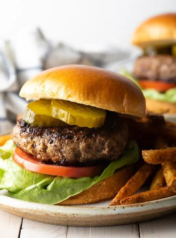

Best Hamburger Patty Recipe

Close your eyes, and picture the perfect hamburger.Is it a thin diner-style hamburger patty, or a thick steakhouse-sized burger?
Seared to the peak of juiciness on a grill or in a flat griddle?
Make burgers your way and have them come out flawless every time with what I consider to be the Best Hamburger Patty Recipe, in my humble opinion.
This is a classic all-American recipe for mouthwatering burgers that can be cooked on the grill, on the stovetop, as thick 1/3 pound patties,
or as ultra-thin griddle patties.Get ready, because you are about to make the burger of your dreams, people!
- Ground Chuck-Preferably an 80 lean/20 fat ratio for the juciest burgers.
- Crushed crackers or Panko bread crumbs-The best binders for juicy hamburgers.
- Worcestershire sauce-Adds a deep beefy, smoky flavor.
- Egg-To bind all of the ingredients together without drying.
- Milk-The enzymes help to soften and tenderize the ground beef.
- Seasoning: Salt, Garlic Powder, Onion Powder, Pepper, or other spices of choice.
How to Make The Perfect Burger Everytime
Steps:
- First, set out a large mixing bowl and add in the ground beef, crusbed crackers, egg, Worcestershire sauce, milk, and spices.
- Use your hands to thoroughly combine until the micture is very smooth.
- Next, press the meat down in the bowl, into an even disk. Use a knife to cut and devide the hamburger patty mixture into 6-1/3 pound grill
grill or skillet patties, or 12 thin griddle patties. Like so:
- Set out a baking sheet, lined with wax paper or foil, to hold the patties. One at a time, gather the patty mix and press firmly into
patties of your desired thickness. You typically want hamburger patties to be slightly larger than the buns they'll be served on since
they'll shrink a bit in the cooking process.
- Place the formed patties on the baking sheet. With thick patties, press a dent in the center of each patty, so they don't puff up
while cooking.
- You can stack the patties with sheets of wax paper between layers if needed.
- Then, preheat the grill or a skillet to medium heat, approximately 350-400 degrees F.
- I love using a cast-iron skillet for getting that drool-worthy caramelized sear on the burgers.
For thick patties: Grill or fry the patties for 3-4 minutes per side for a medium burger.
For thin patties: Cook on the griddle for 2 minutes per side.
Ideally, you only want to flip your burgers once or twice during cooking.
Pro Tip: Homemade cooked hamburger patties will keep well tightly wrapped in plastic wrap, or in an airtight container,
in the fridge for up to 3 days, or in the freezer for up to 3 months.